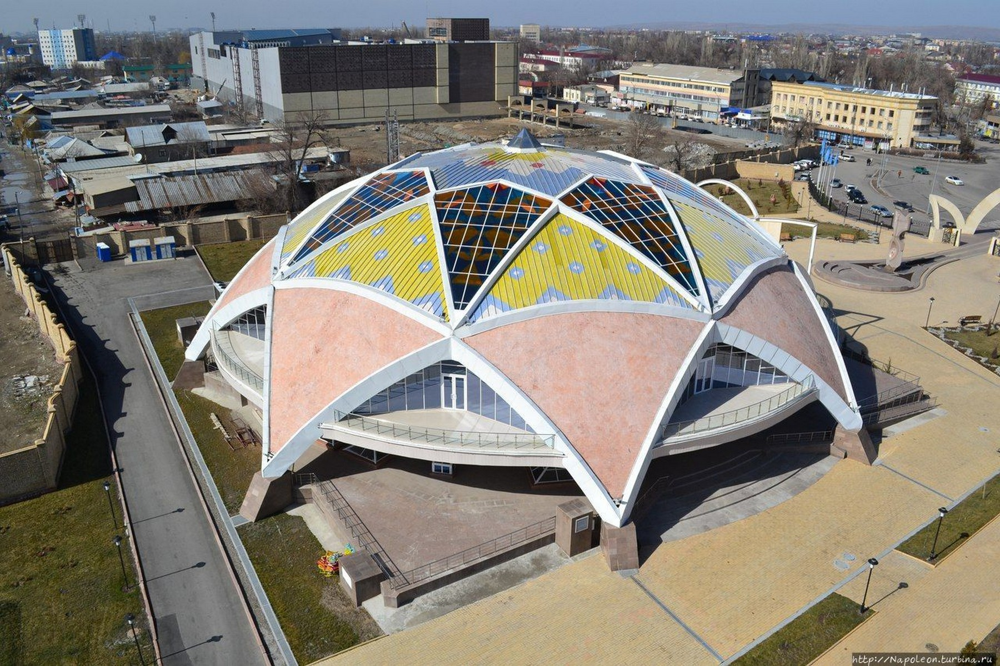
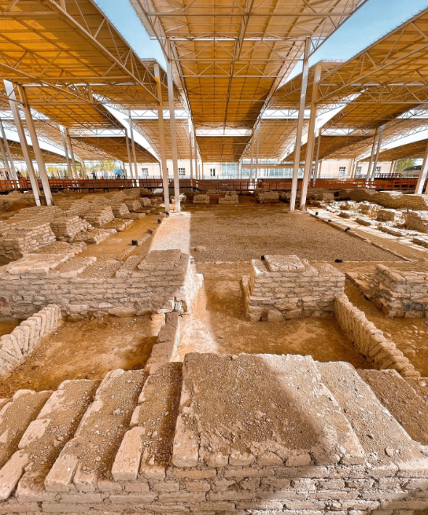
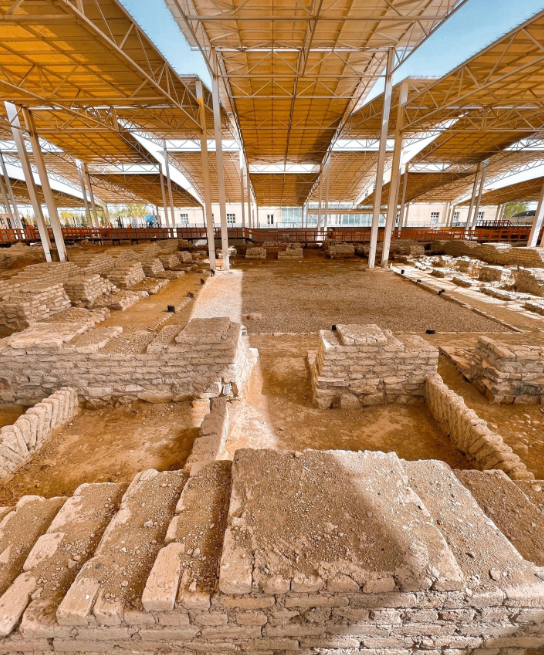

A journey through the history of one of Central Asia's oldest cities
The "Ancient Taraz Monuments" Museum Complex is a unique historical and cultural park that recreates the appearance of Taraz during the Great Silk Road era. It features archaeological artifacts, reconstructions of ancient structures, and exhibits highlighting the region’s rich heritage.
- Established: 2002
- Exhibitions: Archaeology, Ethnography, Architecture
- Area: over 5 hectares
- Key Sites: Mausoleums, ancient walls, city gates
What to see?
- 🺠Relics from the early medieval period
- 🕌 Architectural monuments from the 6th–12th centuries
- 🥠Guided tours and multimedia exhibitions
How to get there?
📠Address: Taraz, Tole Bi Street, near the archaeological park
🚕 Taxi or bus from the city center (routes No. 10, 18, 25)
Visitor Info
⏰ Opening hours: 09:00 to 18:00 daily
💰 Entry fee: 1000 KZT (adults), 500 KZT (children)
🗣️ Tours available in Kazakh, Russian, and English
This museum complex is a bridge between past and present, where the history of the great steppe comes alive.
PHOTOS

 
